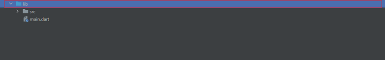

Introduction
NFTO is a dedicated front-end theme for NFT marketplaces. This theme is perfect for any kind of NFT creation and exchange marketplace. NFTO has a wide range of pre-fixed features and options that can be easily modified with access to a large number of variations. It’s a visually stunning and convenient theme that comes ready with tons of functionalities, reducing the need for developing a platform separately for front-end purposes.
Basic Information
-
Flutter Version :
3.3.8 -
Dart Version :
2.18.4 -
Install Flutter :
-
Set up an editor :
https://docs.flutter.dev/get-started/editor -
Build Our App :
https://flutter.dev/docs/get-started/test-drive -
Change App Icon :
Go to the "launcher" folder under the "assets" folder, which can be found in the "nfto" folder. Then replace the png files with your own icon, background, and foreground. Go to this folder

And Run below code to change the icon.
flutter pub get flutter pub run flutter_launcher_icons:main -
Change App Name :
Go to the /nfto/pubspec.yaml file then change the app name.

And Run below code to change the app name.
flutter pub get flutter pub run flutter_app_name -
Change Package Name :
Visit this link -
Build & Release Android App :
Visit this link -
Add new language :

Directory & files
This is a screenshot of the entire directory of NFTO that contains all the necessary folders and files.
You can find the src folder and main.dart file under the lib folder.

You can find the src folder and main.dart file under the lib folder.
Go to the src folder in order to get access to the following folders:
- core
- data
- localization
- models
- modules
- route
- service
- theme

The core folder contains the following folders:
- constants (for constant variables)
- reusableComponents (can be used in different parts of the app for different UI instances)
- utils

Run & Build
Android Config
IOS Config
Get Dependencies
UI
-
Onboarding
These are the interface images for the three Onboarding screens.


-
Home
This is the Home screen with its multiple sections.
-
My Profile
This is the My Profile screen, where you can add a number of information and buttons, such as collections, activities, history, and details.
-
Search
The first two images demonstrate the Search screens. You can add different sections to this screen, such as recently viewed, popular searches, and trending NFTs. You’ll also get the search suggestion functionality. You can add search filters based on category, currency, and price range on the Search Filter screen in the third image. The fourth image shows the Search results screen.


-
Faves
The Faves screen will show the favorite NFTs of the user. -
Cart
The Cart screen will appear before checkout.
-
Create New Collection
These images show the Create new collection screens. You can include minting options, as seen in the first image. Users have to upload the necessary details of the collection, as seen in the second image. They then have to upload their image, as seen in the third image. The fourth image shows the preview screen that summarizes the details of the collection. The New collection created screen will notify the user of the successful creation of a new collection.


-
My Collection
These are the My Collection screens. You can add various buttons, like items, analytics, activity, and details. You can also add other sections like total views, total sales, or charts of traffic sources.This is the Delete this collection screen that will notify the user regarding the confirmation of the deletion of a collection.
-
Create New NFT
These are the Create new NFT screens. You can have an Add Attribute screen. The next two images show the interfaces for users when they are creating a new NFT by inputting the NFT details and the artwork. The fourth image shows the preview screen and the last image shows the New NFT created screen which notifies users of successful new NFT creation.
-
Sell NFT
The first two screens show the selling options that you can include on your NFT marketplace platform.These are the screens showing all the offers for an NFT. Users can decline all offers or accept an offer as shown in these two images.
Users can decline all offers or accept an offer as shown in these two images.
 Users can also see all bids and close an auction on the screens shown below.
Users can also see all bids and close an auction on the screens shown below.


-
My NFT
These are the My NFT screens where information such as current owner details, market data, sales history, and NFT details can be shown with different buttons.The Delete this NFT screen will appear when the user is about to delete an NFT.

-
Stats
The Stats screen can contain useful metrics, graphs, and charts regarding sales and user activity.
-
Settings
Options such as profile visibility, ad preferences, activity tracking, and communication can be added on the Settings screen. -
Notifications
Notifications about bids, purchases, and other activities can be included in the Notifications screen.
-
Wallet
The Wallet screen can contain portfolio data, prices, and transaction details.
Contact Us
Please do not hesitate to contact us if you have any queries regarding NFTO or its features and functionalities. For any kind of support or assistance, email us at: (input email here)